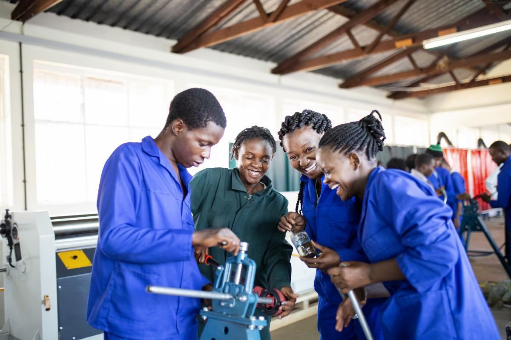
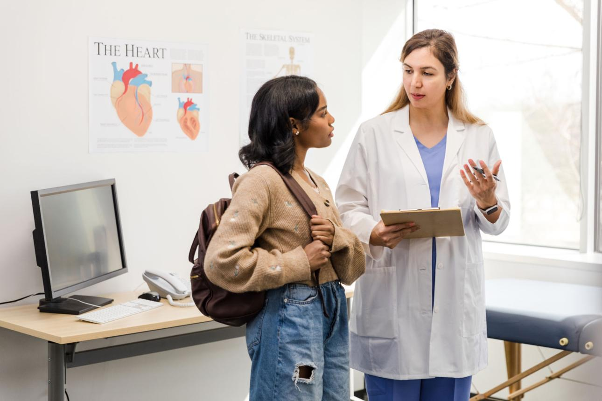
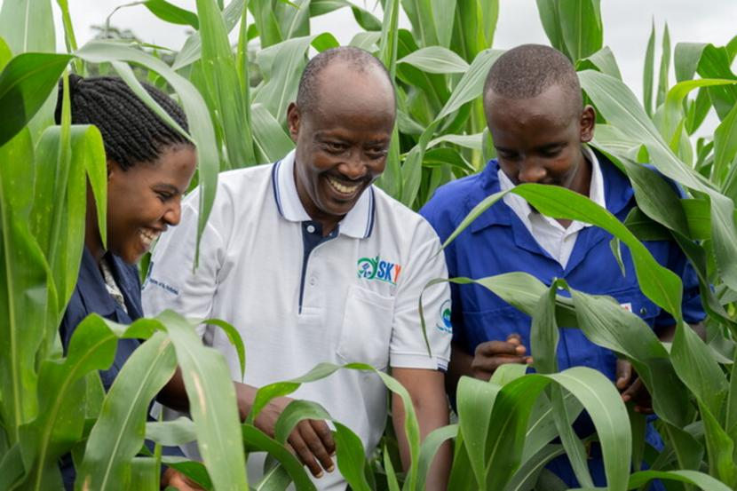
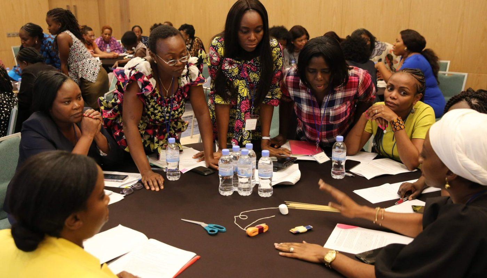
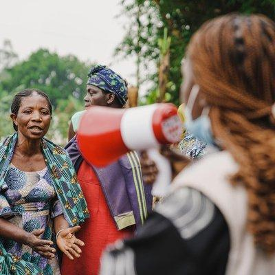

Creating Opportunities Through Youth Development Programs
RDIY implements sustainable programs that empower young people, strengthen communities, improve livelihoods, and promote long-term social and economic development across Sierra Leone.
Our Areas Of Intervention
Restoration & Development Initiative for Youth (RDIY) develops and implements programs that address unemployment, poverty, social exclusion, drug abuse, food insecurity, educational barriers, and limited economic opportunities among vulnerable youths.

Youth Empowerment & Skills Development
This program equips young people with Industrial, technical and life skills that improve employability, entrepreneurship, and economic independence.
Through structured training, mentorship, and hands-on learning, participants gain the confidence and competencies required to work in the industry.
Program Objectives
- Improve youth employability
- Reduce unemployment
- Develop vocational competencies
- Promote self-reliance
- Encourage innovation and creativity
Rehabilitation & Mental Health Support
RDIY provides rehabilitation support services for youths affected by substance abuse, trauma, social exclusion, and mental health challenges.
The program promotes recovery, psychosocial wellbeing, community reintegration, and personal development.
Key Services
- Counseling services
- Psychosocial support
- Rehabilitation programs
- Mental health awareness
- Community reintegration support


Agriculture & Food Security
Agriculture remains one of the most effective pathways for creating jobs and improving food security in Sierra Leone.
RDIY empowers youths through modern agricultural practices, agribusiness development, food production, and sustainable farming.
Key Activities
- Crop farming
- Poultry farming
- Fish farming
- Vegetable cultivation
- Fruit farming
- Food processing and preservation
- Selling of farm produce
Entrepreneurship & Financial Inclusion
This program supports already existing youth-led businesses with training on business management, financial literacy, Savings education, mentorship and business boost support.
The goal is to strengthen already existing youth- led enterprises that contribute to local economic growth.
Program Areas
- Business mentorship
- Financial literacy training
- Savings education
- Enterprise boost support.
- Enterprise management


Community Outreach & Advocacy
RDIY conducts awareness campaigns and advocacy initiatives aimed at addressing social and economic challenges affecting vulnerable youths and communities.
The program promotes youth protection, responsible citizenship, social inclusion, and community participation.
Key Focus Areas
- Drug abuse prevention
- Youth protection
- Mental health awareness
- Community sensitization
- Social inclusion advocacy
Industry Training Areas
The Youth Skills Academy serves as RDIY's primary vocational and entrepreneurship training platform, providing practical training that prepares young people for employment and self-employment.
Creating Sustainable Change
Employment Creation
Increasing access to jobs and income opportunities.
Entrepreneurship Growth
Supporting youth-led enterprises that contribute to local economic growth.
Food Security
Improving agricultural productivity and food availability.
Community Development
Strengthening communities through sustainable initiatives.
Partner With Us To Expand Youth Opportunities
Together we can empower more young people, strengthen communities, and create sustainable futures.